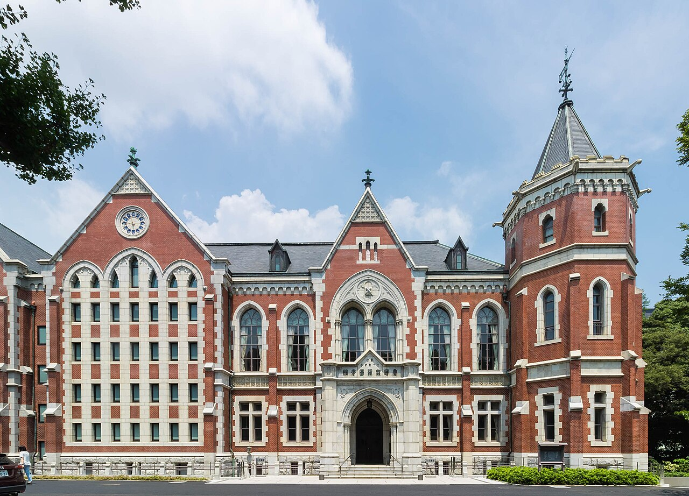

🌸慶應義塾大学に進学する富山県出身者のための男子学生寮
青雲寮（せいうんりょう）は、東京都府中市にある富山県出身の男子大学生専用の学生寮です。月額約5.1万円（居住費3万円＋食費1.6万円＋負担金0.5万円）という破格の料金で、食事付き、個室完備、セキュリティも万全な環境で、安心して大学生活を送ることができます。
「三田・日吉・矢上の家賃が高い」「東横線や山手線の混雑が不安」「留学や就活費用も確保したい」――そんな富山県出身の方へ。青雲寮なら固定費を抑え、生活リズムを整えながら慶應ライフを送れます。
入寮時特待生制度について
富山県学生寮では、新入寮生を対象とした「入寮時特待生制度」を実施いたします。選考により特待生に認定された方には、入寮費（5万円）と1年目の寮費半額（18万円）の合計23万円が免除（返金）されます。
詳細は入寮生の募集についてをご覧ください。
🏠 格安の寮費
月額約5.1万円（居住費3万円＋食費1.6万円＋負担金0.5万円）。東京の一人暮らしと比べて圧倒的にお得！
🍱 栄養満点の食事
朝夕2食付き。栄養バランスの取れた温かい食事を提供
🔒 安心のセキュリティ
24時間管理体制で、初めての東京生活も安心
🚃 好立地
府中市の閑静な住宅街。都内主要大学へアクセス良好
✨慶應義塾大学の通学アクセスと家賃比較で選ばれる理由


🚇 通学時間・アクセス
三田・信濃町へ約60〜75分、日吉・矢上へ約70〜90分。SFCは約100〜120分で通学可能です。
💰 固定費の圧縮
家賃7〜9万円圏を回避し、寮費＋食費込みで月7万円前後の差。留学・資格・インターン準備に回せます。
🤝 同郷コミュニティ
富山県出身の先輩・同期が履修・就活情報を共有。上京初期の不安を軽減します。
📚 学習環境
個室・Wi-Fi・学習室完備。朝夕2食付きで勉強・インターンと両立しやすい環境です。
🚇通学アクセス詳細
三田・信濃町キャンパス
ルート: 東府中 → 新宿（京王線）→ 大門/信濃町（都営大江戸線or中央線）→ 徒歩
所要時間: 約60〜75分
特徴: 乗換2回。都営線経由で山手線混雑を回避可能。
日吉・矢上キャンパス
ルート: 東府中 → 新宿（京王線）→ 渋谷（山手線）→ 日吉（東急東横線）→ 徒歩/矢上へ徒歩10分
所要時間: 約70〜90分
特徴: 本数多いが朝は混雑。時間をずらすと座れることも。
SFC（参考）
ルート: 東府中 → 新宿（京王線）→ 小田急線で湘南台 → バス
所要時間: 約100〜120分
特徴: 長距離のため時間とコストを確認して検討。
💴費用比較（一人暮らし vs 青雲寮）
慶應周辺（都心・日吉エリア）で一人暮らしをする場合と、青雲寮に入寮した場合の家賃（月額）比較です。
一人暮らし
（個室）
※ 三田・日吉周辺のワンルーム相場（管理費込）との比較例
| 項目 | 一人暮らし（慶應エリア） | 青雲寮（特待生） | 備考 |
|---|---|---|---|
| 家賃（月額） | 70,000円〜 | 15,000円 | 個室・家具付き |
| 食費（月額） | 30,000円〜 | 23,000円 | 朝夕2食付き（日曜祝日除く） |
| 光熱水費 | 10,000円〜 | 寮費に含む | |
| 通信費 | 5,000円〜 | 寮費に含む | Wi-Fi完備 |
| 月額合計 | 115,000円〜 | 36,000円 | 毎月約7万円の差 |
📖寮生活のイメージ


タイムスケジュール例
- 06:50 起床・朝食
- 07:40 通学（新宿経由で三田/日吉へ）
- 09:00 授業・演習
- 12:00 昼食
- 13:00 ゼミ・実験
- 18:30 帰寮・夕食
- 20:00 自室でTOEIC/資格・就活準備
- 23:30 就寝
在寮生の声
「都心の家賃を抑え、浮いたお金を留学準備やインターンの交通費に充てています。通学は1時間前後ですが、電車内を勉強時間に当てれば問題ありません。」
🧭慶應義塾大学の寮・一人暮らしを考える保護者・受験生・高校生へ
慶應義塾大学の住まい選びでは、三田・日吉・矢上・信濃町・湘南藤沢と学部・学年によって通学先が変わることを念頭に、長期的な視点で住まいを比較することが重要です。特に「1〜2年次は日吉、3年次以降は三田」というキャンパス移行を見越した選択が求められます。
キャンパス情報や大学寮制度は年度ごとに更新があるため、慶應義塾大学公式サイトもあわせて確認してください。
保護者が確認したい点
- 4年間で節約できる金額: 三田・日吉周辺の一人暮らし（月11万円以上）と青雲寮（月3.6〜5.1万円）を比較すると、4年間で約270〜350万円の節約になる計算です。就職活動費や留学費の原資になります。
- 安全・安心な生活環境: 青雲寮は24時間管理体制で、富山県出身者のみが入居する安心できるコミュニティです。上京直後の不安を軽減できます。
- 食事管理: 朝夕2食付きで栄養管理がされており、忙しい慶應生活の中でも規則正しい食生活を維持できます。
- 帰省のしやすさ: 府中市から羽田空港まで約40分、東京駅まで約40分。富山への帰省も計画しやすく、長期休暇に定期的に顔を見せられます。
受験生が比較したい点
- 学部・学年ごとのキャンパス変化: 慶應は学年進行によって通学先が変わるため、入学時だけでなく進学後のキャンパスも確認したうえで住まいを選ぶことが重要です。青雲寮からは三田・日吉いずれにも通学可能です。
- 慶應公式寮 vs 青雲寮: 大学公式寮は抽選制で入居できるか不確実なケースがあります。青雲寮なら早めに申込することで確実に住まいを確保できます。
- 特待生制度活用: 選考次第で1年目23万円免除。節約した分を慶應ブランドを活かした留学・インターン・資格取得費用に充当できます。
高校生が先に知りたい点
- 入学後すぐ住める: 合格発表後に申込すれば、4月の入学と同時に入寮可能。慶應周辺で部屋を探す手間・時間・初期費用が省けます。
- 部活・サークルとの両立: 慶應は体育会や文化系サークルが非常に盛んです。日吉・三田キャンパスへ1〜1.5時間で通えるため、授業後のサークル活動にも参加しやすい環境です。
- 就活準備のしやすさ: 慶應生は早期から就活・インターンに動くことが多いです。府中から渋谷・品川・新宿など主要ビジネス街へのアクセスが良く、節約した家賃を就活費用や資格試験代に充当できます。
- 同郷の先輩から学ぶ: 慶應に通う富山県出身の先輩から、履修登録・サークル選び・就活の進め方など実体験に基づくアドバイスが得られます。
❓慶應義塾大学の寮に関するよくある質問
Q. 慶應義塾大学の公式寮との違いは何ですか？
A. 慶應義塾大学には複数の学生寮がありますが、抽選制・資格制限のため必ず入れるとは限りません。青雲寮は富山県出身者専用の県人寮で、食事付き・個室完備・24時間管理体制が特徴です。食費を含めたトータルコストで比較すると、月額約5.1万円（朝夕2食付き）の青雲寮は非常にコストパフォーマンスに優れています。
Q. 通学時間はどのくらいですか？
A. 三田・信濃町キャンパスへは約60〜75分、日吉・矢上キャンパスへは約70〜90分が目安です。SFCは約100〜120分です。京王線で新宿方面へ向かい、各路線に乗り換えてアクセスします。
Q. 三田・日吉周辺の家賃相場と比べてどのくらい違いますか？
A. 三田・日吉周辺のワンルームは管理費込みで月7〜9万円が相場です。食費・光熱費を加えると月11万円以上になることも。青雲寮は月額約5.1万円（朝夕2食・光熱費・Wi-Fi込み）で、毎月約7万円の差が生じます。4年間で約300万円の節約になる計算です。
Q. 食事や光熱費は含まれますか？
A. はい、朝夕2食（日曜・祝日除く）、光熱費、Wi-Fiが寮費に含まれています。一人暮らしで別途かかる食費・光熱費・通信費を気にする必要がありません。
Q. 学部・学年によってキャンパスが変わりますが対応できますか？
A. はい、青雲寮からは三田・日吉いずれのキャンパスにも通学可能です。1〜2年次の日吉、3年次以降の三田への移行にも対応しており、住まいを変える必要なく継続して入寮できます。
Q. 帰りが遅い日も対応できますか？
A. はい、事前連絡があれば柔軟に対応しています。インターンや就活の説明会、サークル活動で遅くなる場合も、終電を利用して帰寮できます。
Q. 入寮時特待生制度はどのような制度ですか？
A. 新入寮生を対象とした選考制度で、認定された方には入寮費（5万円）と1年目の寮費半額（18万円）の合計23万円が免除されます。慶應義塾大学に入学する富山県出身者も申請可能です。詳細は募集要項をご確認ください。
富山県出身で慶應義塾大学を目指す皆さんへ
固定費を抑え、学びと挑戦に集中できる青雲寮をご検討ください。
見学も随時受け付けています。